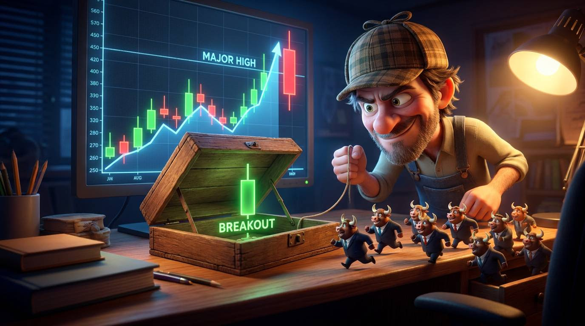

Welcome back after the long weekend. Hope you had a good Bank Holiday…🇬🇧
We saw a bit of an escalation between the US and Iran over the last few days, which has given crude oil a shove.
Equities were pretty muted yesterday, but crude caught and held that bid...
From the economic calendar perspective, the big one this week is gonna be Non-Farm Payrolls on Friday at 1:30 pm UK time.
But it's Tuesday…
Which means it's Pepperstone webinar day.
And I've got a good one lined up for you this evening…
TURTLE SOUP TRADING STRATEGY

Tonight we're going to dig into the Turtle Soup trading strategy.
We'll start with the strategy itself…
- The setup.
- The entry.
- Stops, targets, and risk.
- Filters and context.
- How to actually spot the opportunity.
But I want to take this one a bit further than just giving you a set of Turtle Soup rules you can Google in a few minutes…
Because really, Turtle Soup is a strategy for trading traps.
And that has a far broader value to you and me than just the soup stuff…
So, we're also going to look at swing failures and failed breakouts generally… why they happen, what's going on from a supply/demand perspective, and importantly, who is trapped and what they might be forced to do next.
The longer I've traded, the more interested I've become in two things:
-
Mistakes + urgency.
Someone gets caught on the wrong side of a move…
And suddenly they have an urgent reason to get out.
Add another group of traders wanting to get into the market in the opposite direction, and you can have a very interesting setup.
Muhahaha 😈
So tonight we'll look at how to identify those situations, the context that makes some traps better than others, and give you a framework for potentially adding trap hunting to your own trading playbook.
Should be a good one.
Actually, no, it WILL be a good one, so come and join live to get the full energy 😁